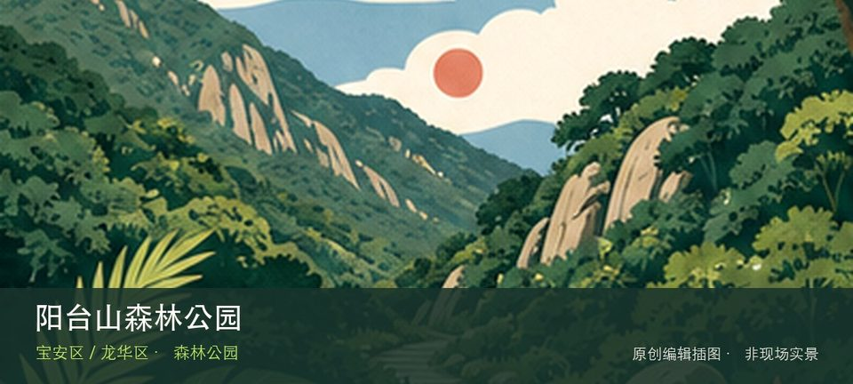

适合谁
适合具备半日登山体力并能独立组织返程的人；双入口不适合临时跨越后再找车。

SHENZHEN GUIDE · 130
石岩侧 / 大浪侧 · 森林公园
阳台山森林公园位于宝安石岩侧与龙华大浪侧，跨区山体总面积大，石岩侧与大浪侧对应不同入口、爬升和返程体系，必须先选一侧再谈登山路线。这里不是只有一个打卡点：石岩侧官方入口提供主要线索，大浪侧胜利大营救广场补足另一层现场关系。现场不必追求一次走完，先在石岩侧官方入口与大浪侧胜利大营救广场之间确定主线，再按体力、日照和天气保留折返方案。山地、滨水或林下路面会随降雨改变，当天预警和开放边界始终比旧轨迹更优先。
WHY GO
适合具备半日登山体力并能独立组织返程的人；双入口不适合临时跨越后再找车。
石岩侧或大浪侧二选一，按官方地图做明确往返；没有跨区接驳方案时不穿越到另一侧。
公共交通先到宝安石岩侧与龙华大浪侧片区，再以阳台山森林公园公开参观入口为终点；多入口地点须按计划游线选择入口，并预先锁定返程站点。
石岩侧与大浪侧停车点不通用；先选入口再导航对应正规停车区，周末满位后改乘公交，不在登山口占道。
10 月至次年 4 月较舒适；4—9 月湿热且雷雨集中，强降雨前后不进入山脊、溪谷、陡坡或低洼路段。
NEARBY IDEAS
 编辑配图·非现场实景
编辑配图·非现场实景
阳台山环线位于胜利大营救广场起终点，跨龙华、宝安和南山，约38.5公里的挑战级环线串联阳台山主脊、山石景观与多处水库，只适合按天气和体力计划。
 编辑配图·非现场实景
编辑配图·非现场实景
龙华环城绿道（阳台山段）位于石凹水库至部九窝绿谷公园段，约27.9公里的长距离山地段通常06:00—21:30开放，串联三座水库和阳台山森林景观。
 编辑配图·非现场实景
编辑配图·非现场实景
深圳（宝安）劳务工博物馆位于石岩上屋，依托旧工业建筑记录外来劳务工的生产、居住与城市贡献，是理解深圳制造业背后普通劳动者的重要场馆。